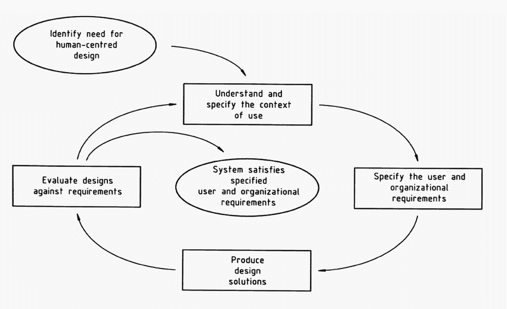
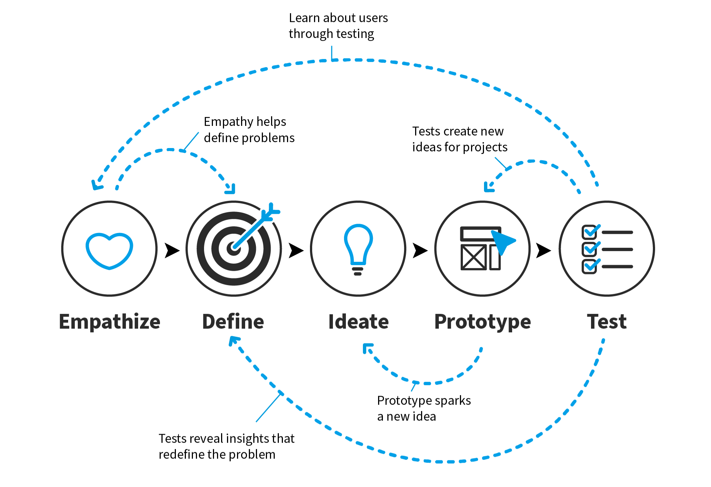
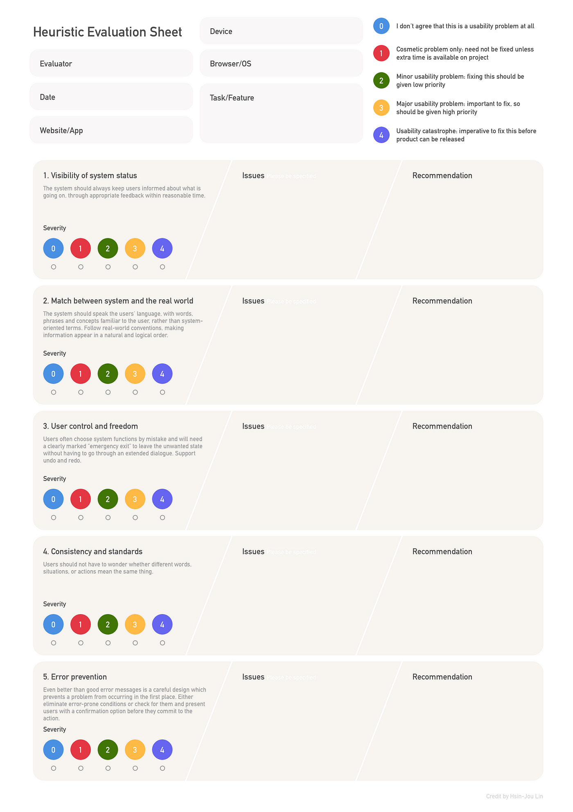
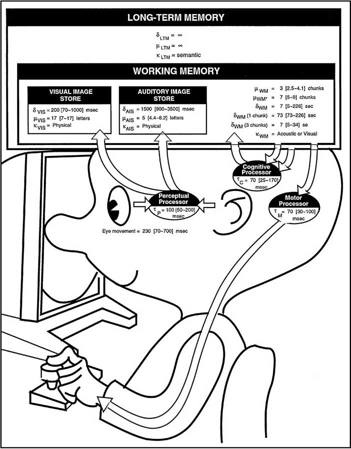
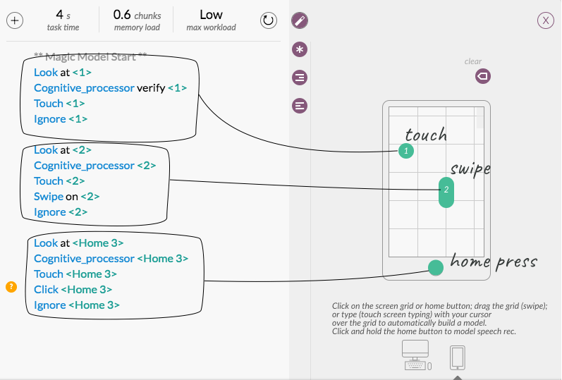
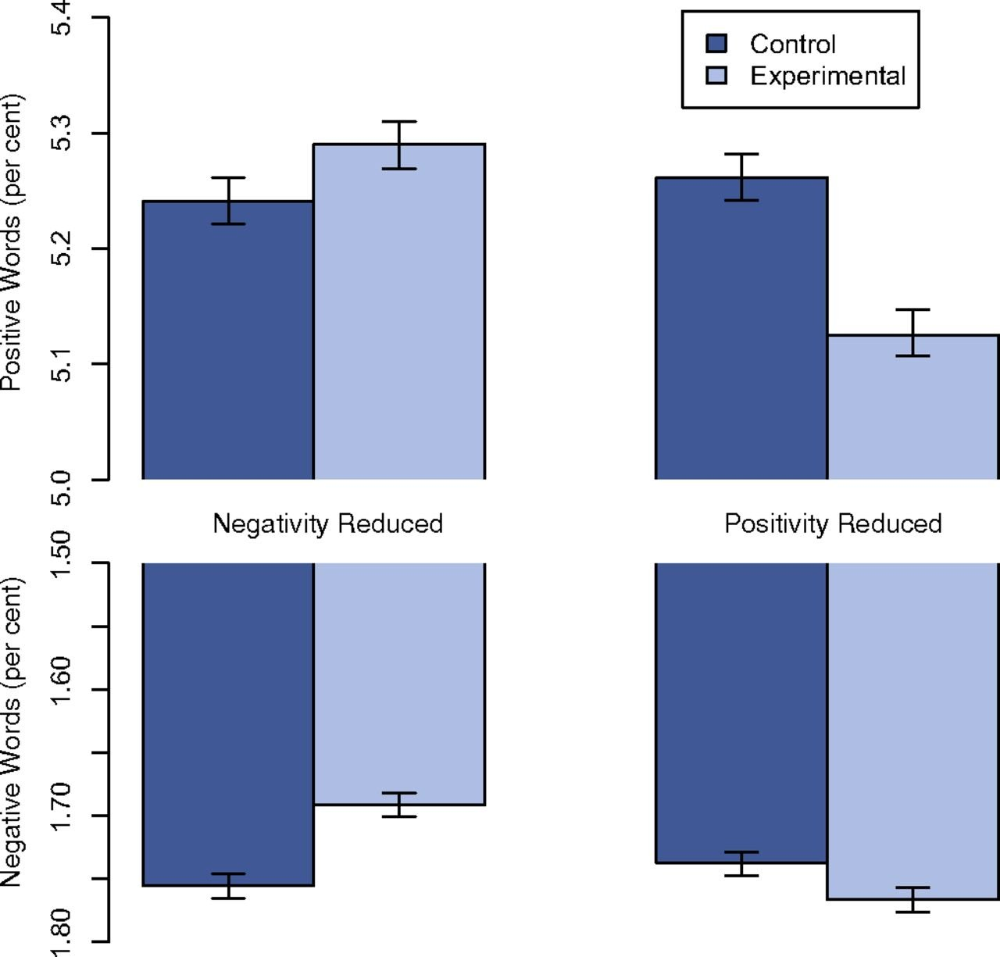
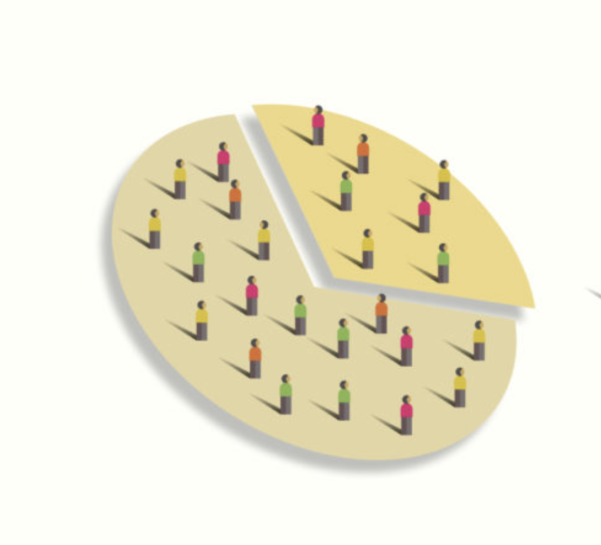
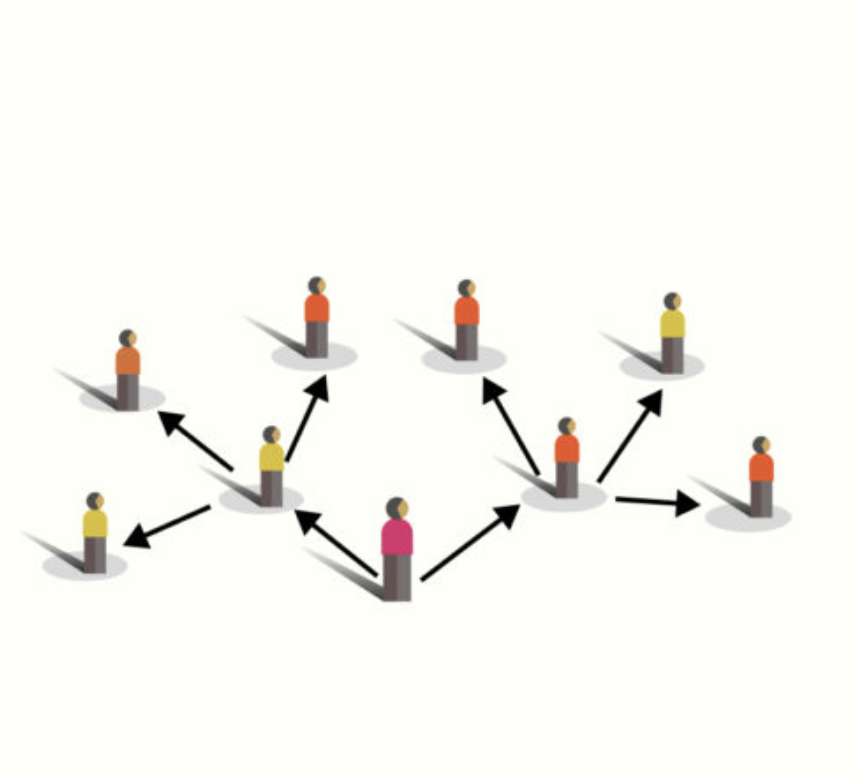
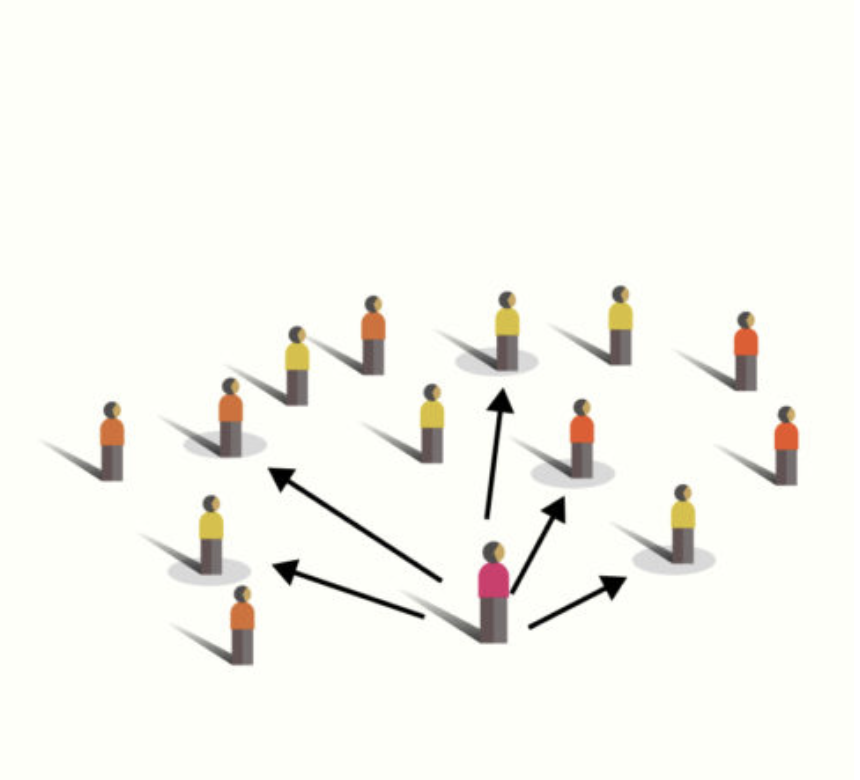

Qu'est-ce qui différencie un bon protocole d'un mauvais?
Pour que l'information soit fiable et fasse consensus entre les différentes partie prenantes, l'approche doit être systématique.
Elle doit permettre de démêler ce qui dans les expériences utilisateurs est influencé par les choix de conception, de ce qui est influencé par autre chose.
Aux origines de l'usabilité
1939-45
Essor de la recherche sur les Facteurs Humains et l'Ergonomie des systèmes technologiques dans l'aéronautique.
1977
Sortie du Commodore PET et du Apple II
1989
Le Technology Acceptance Model : Davis théorise que la facilité d'usage et l'utilité sont les principaux prédicteur de l'adoption d'une la technologie
1993
Nielsen propose une définition de l'usabilité selon 5 dimensions mesurables.
Facilité d’apprentissage
Le système permet-il aux utilisateurs de réaliser facilement les tâches de base dès leur première utilisation ?
Efficacité
Une fois le design pris en main, les utilisateurs peuvent-ils accomplir leurs tâches rapidement ?
Mémorabilité
Après une période sans utilisation, les utilisateurs retrouvent-ils facilement leurs repères ?
Gestion des erreurs
Les utilisateurs font-ils beaucoup d’erreurs ? Sont-elles graves ? Et peuvent-ils s’en remettre facilement ?
Temps de complétion de la tâche en fonction du nombre de répétitions de la tâche.
Est-ce que toutes les qualités de votre expérience peuvent-être interprétées selon ces termes?
Que cherche-t-on à evaluer
en amont, si les choix de conceptions auront les conséquences attendues en condition réelless
à se mettre en conformité avec certaines normes de conception
en aval, si les choix de conceptions ont bien eu les conséquences attendues
éventuellement, à généraliser les liens de cause à effet entre un choix de conception et un phénomène observé en conditions réelle
Au delà de l'évaluation, on cherche à
Identifier des questions, problématiques et besoins non anticipées
Comprendre les utilisateurs, découvrir leurs usages, biais et comportements
Découvrir des pistes d'amélioration
Positionnement dans un cycle de design

Structuration d'un cycle de conception d'après la norme ISO 13407

Structuration d'un cycle de conception d'après la méthode Design Thinking
Selon la définition consensuelle, les tests utilisateurs remplissent la fonction Evaluate designs against requirements, ce qui correspond à une démarche dite validatoire ou sommative.
Les études utilisateurs remplissent la fonction Understand and specify the context of use, ce qui correspond à une démarche dite exploratoire ou formative
Mais dans la pratique, on fait souvent les deux simultanéments, car on a à la fois des questions ouvertes et des questions fermées
Cout du changement en fonction de l'avancement d'un projet
Heuristiques
Les heuristiques sont des règles ou ensembles de règles, tirées à posteriori de l'expérience - individuelle ou collective qui permettent de prendre des décisions à partir de connaissances incomplètes.
Comparaison des heuristiques de Bastien & Scapin et de Nielsen
Elaborer des heuristiques à caractère universel est un travail de recherche à part entière, qui nécessite de passer en revue un grand nombre d'études de cas et travaux antérieurs. En voici quelques unes parmi les plus fréquemments utilisées:
Le système doit renseigner l'utilisateur sur son état et sur ses changements d'état. Exemple: Bouton non-cliquable doit être grisé
Etablir une correspondance entre le système et le monde extérieur
Le design de l'interface doit reprendre le langage, la logique et les codes du monde "réel"
Laisser l'utilisateur libre et en contrôle
Les utilisateurs doivent pouvoir changer d'avis si ils le souhaitent. exemple: Les actions doivent être réversible via un raccourci ou une commande dédiée
Respecter la cohérence et les standards internes et externes
Les mécanismes d'interaction et les codes visuels doivent être cohérents à la fois dans l'application, et vis à vis des conventions de la ou des plateforme sur lesquelles l'application va être utilisée.
Prévenir les erreurs
Un bon design doit éliminer ou au moins signaler les situations qui prêtent facilement à erreur
Privilégier la reconnaissance à la remémoration.
La reconnaissance désigne notre capacité à identifier un événement ou une information comme étant familiers, alors que le rappel consiste à récupérer une information en mémoire avec peu d'indices.
Pour aller plus loin
Flexibilité et efficacité
les utilisateurs doivent pouvoir configurer l'interface et ses commandes pour maximiser l'efficacité par rapport à leur niveau d'expertise
Esthétique et design minimaliste
L'interface ne doit pas contenir d'éléments visuel superflus (qui ne fournissent pas d'information)
Aider la reconnaissance, le diagnostic et la résolution des erreurs
Les erreurs doivent être signalées via des messages dans un langage compréhensible, qui indiquent la source de l'erreur et les solutions possibles
Aide et documentation
La documentation doit être idéalement inutile, mais toujours disponible, et facile à parcourir.
Le système doit signaler les actions possibles et pertinentes.
Groupage
Le design de l'interface doit garantir que l'agencement spatial des éléments reflète leurs relations fonctionnelles, logiques, sémantiques.
Feedback
Toute interaction doit fournir un retour sensoriel informatif permettant à l'utilisateur d'en anticiper et comprendre les conséquences
Lisibilité
L'interface doit être organisée de façon à minimiser l'effort de lecture (différentiabilité, mouvement oculaires minimisés)
Charge cognitive
Brièveté
La navigation et le séquençage des interaction doivent limiter autant que possible le nombre d'étapes à réaliser pour une tâche donnée.
Densité d'information
La densité d'information doit être suffisamment élevée pour éviter la navigation inutile, et suffisammet faible pour éviter la surcharge cognitive
Controle explicite
Actions utilisateur explicites
Le programme ne doit traiter que les actions émises par l'utilisateur, au moment ou elles sont émises.
Contrôle utilisateur
A tout moment, l'utilisateur doit être en contrôle du flux des opérations traitées par l'ordinateur, avec la possibilité de les interrompre, les mettre en pause, les reprendre.
Adaptabilité
Gestion des erreurs
Cohérence
Compatibilité
Pour aller plus loin
Principes de l'ingénierie cognitive de Gerhardt-Powals (1996)
20 Heuristiques d'usabilité de Weinschenk & Barker (2000)
Principes du design d'interaction de
Bruce Tognazzini (2014)
Principes universels du design de Lidwell et al.'s (2023)
8 règles d'or de Shneiderman (1987)
Conduire une inspection heuristique
Les heuristiques peuvent être utilisées comme grilles d'analyse pour inspecter un design et en anticiper les défauts en l'absence de données empiriques (tirées de l'observation).
Mais cette même grille d'inspection peut être utilisée pour structurer un processus d'observation.

Un modèle de grille d'inspection heuristique standardisée
Activité
Choisissez une liste d'heuristique, et pour chaque principe, essayez de trouver un exemple de design qui l'implémente.
Y a-t'il des situations ou les heuristiques peuvent être incompatibles entre elles?
Approches analytiques
Les approches analytiques reposent sur une modélisation abstraite - souvent avec une dimension mathématique - des facteurs humains.
On dispose grâce à des travaux de recherche antérieurs d'estimations sur la durée de différentes opérations motrices, sensorielles ou cognitives susceptible d'intervenir au cours d'une interaction.
Le modèle GOMS
(Goal, Operator, Method, Selection)

Le KLM
(Keystroke Level Model)
Le KLM est l'implémentation la plus ancienne (et aussi la plus basique) du modèle GOMS.
Elle est conçue pour modéliser les actions dans un setup desktop basique.
Elle a été adaptée pour s'élargir à d'autres modalités d'interaction, par exemple tactile avec le Touch Level Model (TLM)

L'interface de Cogulator, un logiciel de calcul de temps d'interaction
Une approche empirique consiste à répondre à une question en s'appuyant sur des données observées, en s'assurant que ces observations fournissent une image fidèle de la réalité.
Voici quelques exemples:
Ou est-ce que les utilisateurs font le plus d'erreurs?
Est-ce que l'interface favorise l'apprentissage de telle ou telle compétence?
Entre deux versions d'une interface, laquelle demande moins d'effort à utiliser?
Y-a t'il des fonctionnalités du système que les utilisateurs n'utilisent pas ou peu?
Selon les ressources dont on dispose et les objectifs, plusieurs approches sont possibles.
Adopter une approche empirique impose de définir un protocole, c'est à dire une façon systématique de collecter les observations qui permettent de répondre à la question.
Définir un protocole nécessite de spécifier les éléments suivants:
Hypothèses et questions de recherche
Est-ce que je cherche à répondre à des question ouvertes, fermées, les deux?
Instructions, interventions et stimuli
Quelle intervention puis-je faire en tant qu'expérimentateur pour déclencher les observations
Traces d'observation
Quelle trace de l'expérience persiste? de quel dipositif ais-je besoin pour enregistrer ces traces ?
Facteurs de contrôle
Y-a t'il des facteurs connus (autres que les choix de conception de mon système interactif) qui peuvent influencer les observations?
Usability testing for FatSecret
Unmoderated
Données: SEQ, bounce, misclick, durée, taux de réussite.
1 facteur (état de l'interface).
1 scenario à 3 tâches, 1 scenario à 4 taches, 1 SEQ après chaque tâche.
Problème: groupes pas de la même taille.
Exemple d'étude controlée: Textoshop
TextoShop est un éditeur de texte qui s'inspire du workflow des environnements d'édition d'images vectorielles
Em 2014 facebook réalise une étude auprès de 680000 utilisateurs, dont le fil d'actualité est manipulé délibérément pour tenter de caractériser l'impact de l'exposition à des contenus négatifs sur la posititivé ou la négativité de l'activité en ligne des utilisateurs du réseau.

Participants
680000
Protocole
Étape
Durée
Traces
Analyse
1 semaine
Historique d'activité des utilisateurs
Analyse de sentiment ( Linguistic Inquiry and Word Count software)
Consentement informé
D'une certaine manière la user research a ceci de commun avec la recherche pharmaceutique que l'on a affaire à des sujets humains, donc il y a des règles d'éthique à suivre.
L'utilisateur doit pouvoir donner son consentement en toute connaissance de cause et le rétracter à tout moment.
Stratégies de recrutement

Echantillonage par quota

Echantillonage boule de neige

Echantillonage ciblé ou raisonné
Echantillonage de convenance
Activité
Identifiez quelle stratégie de recrutement serait justifiée pour votre expérience
Tâches et Scénarios
Quelles situations sont le plus susceptibles de fournir les observations qui permettront de répondre à la question qu'on se pose?
L'ensemble des caractéristiques de la situation que l'on contrôle, on appelle ça des facteurs.
Un facteur peut avoir plusieurs niveaux ou modalités.
Un traitement c'est un choix de modalité pour chacun des facteurs
Questionnaires et échelles
Echelle Sémantique Différentielle
Echelle de Likert
Quelques exemples de questionnaires standardisés
Questionnaires courts
Single Ease Question (SEQ) [Brooke 1996]
Mesure la difficulté ressentie d'une tâche sur une échelle Likert à 1 item et 7 points
Avec un scenario structuré. Auquel cas spécifier la ou les tâches.
Stimulus. Modalités du stimulus. Trace. Métrique
Avec un scenario ouvert
Biais cognitifs et méthodologiques
Biais de confirmation
Tendance à rechercher exclusivement des informations qui confirment des croyances ou hypothèses préexistantes
Biais de faux consensus
Tendance à considérer ses propres habitudes comme étant représentatives de la norme.
Biais de congruence
C'est lorsque l'on teste uniquement une seule hypothèse.
Biais du survivant
Effet Pic-Fin
Tendance à juger une expérience en fonction du ressenti à son apogée et à sa fin, plutôt que sur l'expérience dans son ensemble.
Survient dans les questionnaires / interviews post-test; dans les sondages;
Solutions: Questionnaires post-tâche; croisement avec d'autres données comportementales.
Biais de négativité
Tendance à accorder plus d'importance aux expériences négatives qu'aux expériences neutres ou positives.
Survient dans les interviews ouvertes
Biais rétrospectif
Tendance à considérer les événements comme plus prévisibles qu'ils ne l'étaient réellement avant qu'ils ne se produisent.
Effet d'ambiguïté
Tendance à éviter les options formulées d'une façon qu'on ne comprend pas complètement.
Effet Hawthorne
Tendance d'un sujet humain à altérer (consciemment ou non) son comportement lorsqu'il se sait observé
Effet de désirabilité sociale
Les participants peuvent fournir des réponses qu'ils estiment plus socialement acceptables plutôt que leurs véritables opinions ou comportements.
Effet Barnum
La tendance à accepter des descriptions vagues ou générales comme étant spécifiquement applicables à soi-même.
Survient dans les questionaires
Jingle Jangle Fallacy
Présupposé que deux phénomènes sont les mêmes parce qu'on utilise le même mot pour les désigner;
Réciproquement, que deux phénomènes sont différents parce qu'on utilise des mots différents pour les désigner.
Survient lors de la conception d'un questionnaire; lors de l'analyse de données quantitatives
Effets d'ordre (dont effet d'apprentissage)
L'ordre dans lequel les informations ou les questions sont présentées peut influencer les réponses ou les décisions des participants.
Survient lors d'expériences répétées (Un même participants est soumis successivement à plusieurs modalités du même facteur) Solution: contrebalancer
Effet de cadrage
La manière dont les informations sont présentées (ou "cadrées") peut influencer de manière significative la prise de décision et le comportement des utilisateurs.
Biais d'échantillonnage
Les participants à une étude ne sont pas représentatifs de la population cible - et donc les résultats de l'étude ne sont pas généralisable à celle-ci
Biais d'apprentissage
Les participants à une étude modifient leur comportement en fonction de leur exposition à un stimulus, car ils apprennent à répondre à ce stimulus. Exemple : un test d'acuité visuelle où les participants se souviennent des lettres.
Biais d'interprétation des corrélations
La tendance à interpréter des corrélations comme des relations causales.